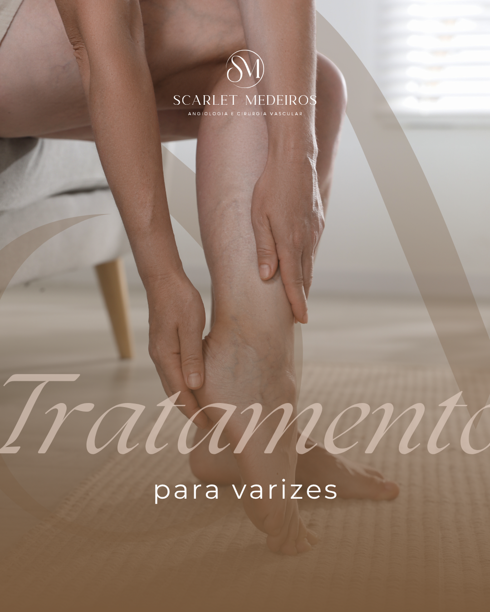
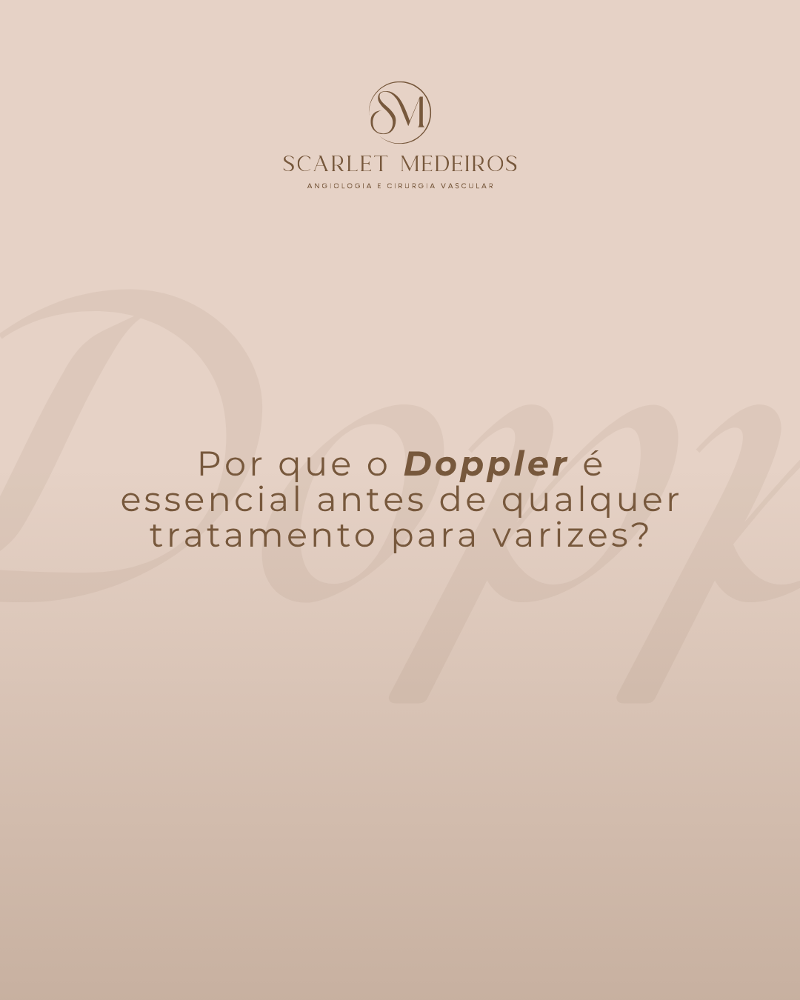

Tratamentos modernos para varizes, vasinhos e acompanhamento vascular completo para sua qualidade de vida e estética.
+2.000 pacientes atendidos com excelência
Sou cirurgiã vascular e angiologista, com vasta experiência no tratamento de doenças do sistema circulatório. Minha abordagem é humana, aliando tecnologia de ponta e técnicas minimamente invasivas.
Acredito que cuidar da circulação é proporcionar liberdade e qualidade de vida. Atuo no tratamento de varizes, vasinhos e acompanhamento vascular para sua saúde e bem-estar.
Meu atendimento é voltado para pacientes que necessitam de cuidado médico especializado na área vascular. Veja se alguma dessas condições se aplica a você.
Tratamentos modernos e minimamente invasivos para varizes calibrosas.
Secagem de vasinhos com técnicas seguras para saúde e estética das pernas.
Cuidados especializados para cicatrização de feridas e úlceras de perna.
Diagnóstico e tratamento seguro de trombose venosa profunda (TVP) e acompanhamento a longo prazo.
Acompanhamento vascular para prevenir e tratar complicações do pé diabético.
Realização de exames de ultrassom Doppler para diagnóstico preciso da circulação.
Um processo simples e acolhedor, focado em você e na sua saúde vascular.
Entre em contato pelo WhatsApp. Entenderei seu caso e agendaremos a consulta no melhor horário para você.
Na consulta, realizarei uma avaliação detalhada do seu histórico, exames físicos e avaliação circulatória.
Você receberá um plano de tratamento individualizado, focado na resolução do seu problema com as melhores técnicas.
Suporte via WhatsApp, orientações no pós-procedimento e acompanhamento completo da sua evolução.
Ofereço muito mais do que uma simples consulta. Meu compromisso é com a sua saúde, segurança e qualidade de vida a longo prazo.
Avaliação vascular completa para identificar o tratamento mais adequado.
Apoio constante via WhatsApp para tirar dúvidas e garantir sua tranquilidade.
Equipamentos de ponta para tratamentos menos invasivos e mais eficazes.
Clínica planejada para proporcionar o máximo conforto e bem-estar.

Dois programas pensados para atender diferentes necessidades e momentos do seu tratamento.
Ideal para quem está começando
Acompanhamento contínuo e completo
Você escolhe a forma que melhor se encaixa na sua rotina.
Atendimento por videochamada para pacientes de todo o Brasil e exterior. A mesma qualidade do presencial, no conforto da sua casa.

Atendimento no consultório em Balneário Camboriú/SC, em ambiente acolhedor e preparado para receber você com todo conforto.
Histórias reais de pacientes que transformaram sua qualidade de vida com nosso tratamento vascular.
"Depois de anos sofrendo com dores nas pernas, finalmente encontrei uma profissional que entende minhas necessidades. O tratamento de varizes melhorou muito minha qualidade de vida em apenas poucos meses."
"O atendimento online é incrível! Moro no interior e consigo ter o mesmo cuidado de quem está perto do consultório. O suporte por WhatsApp é um diferencial enorme."
"Fiz o tratamento completo de escleroterapia e os resultados foram incríveis. Minhas pernas ficaram lindas e não sinto mais peso no fim do dia. Recomendo para todas as pacientes!"
"Profissional atenciosa, dedicada e muito competente. Me senti segura em todo o procedimento e a recuperação foi super rápida. O atendimento humanizado mudou minha experiência com cirurgia!"
Encontre respostas para as perguntas mais comuns sobre o atendimento vascular.
A primeira consulta tem duração de cerca de 1 hora, pois é feita uma avaliação completa do seu histórico vascular, exame físico e, se necessário, o ecodoppler.
A frequência é personalizada de acordo com o seu caso. Geralmente, os retornos são a cada 15, 30 ou 60 dias, dependendo da fase do tratamento e das suas necessidades.
O atendimento é particular. Porém, emito recibo para reembolso junto ao seu convênio médico, caso o plano aceite. Consulte sua operadora para verificar a cobertura para consultas vasculares.
Sim! A consulta online é realizada por videochamada e tem a mesma qualidade do atendimento presencial. A diferença é que a avaliação antropométrica (medidas corporais) é feita de forma orientada remotamente ou com apoio de aparelhos que o paciente tenha em casa.
Não é necessário encaminhamento médico. Se você tem queixas como dor, inchaço nas pernas, vasinhos ou histórico familiar de varizes, pode agendar diretamente sua avaliação.
Você terá acesso a um canal direto comigo pelo WhatsApp para tirar dúvidas sobre pós-procedimentos, medicações e recuperação. A equipe está sempre disponível para garantir sua tranquilidade.
Entre em contato para saber mais sobre os programas de acompanhamento e valores. Sua jornada para uma vida mais saudável começa aqui.